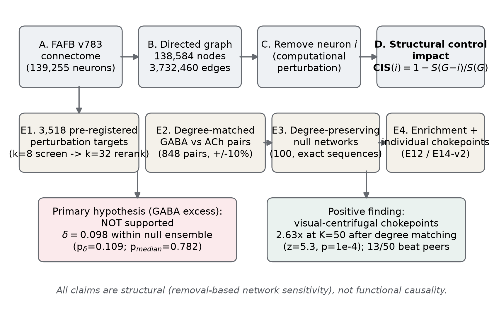
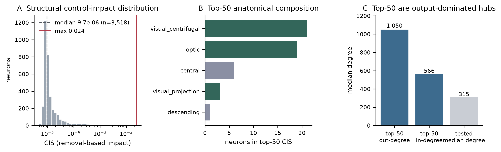
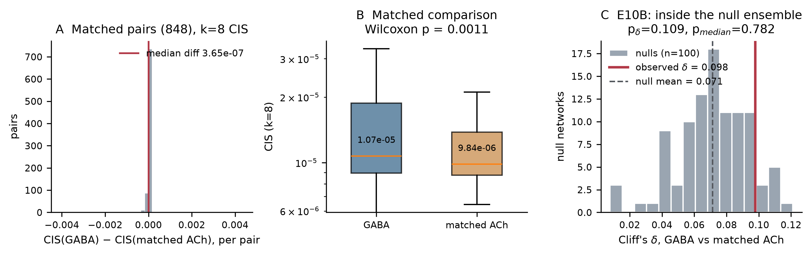
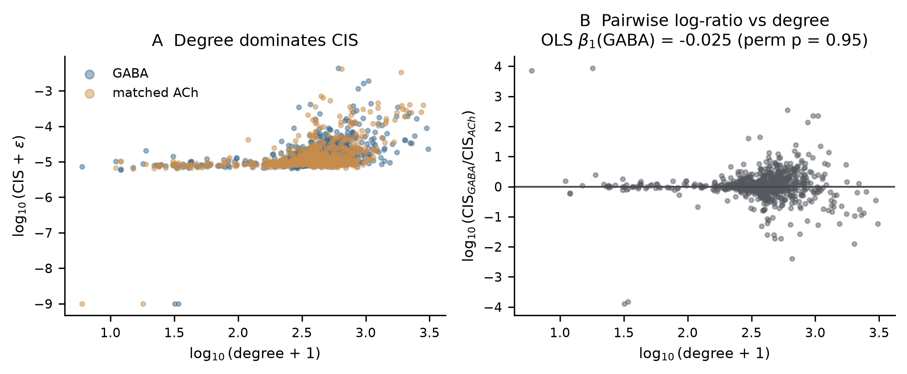
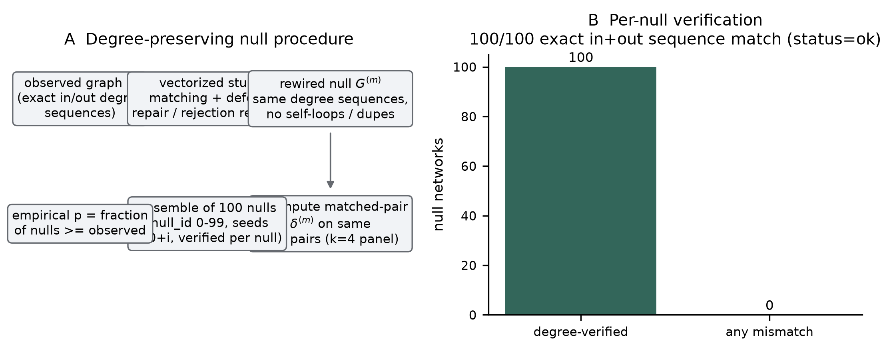
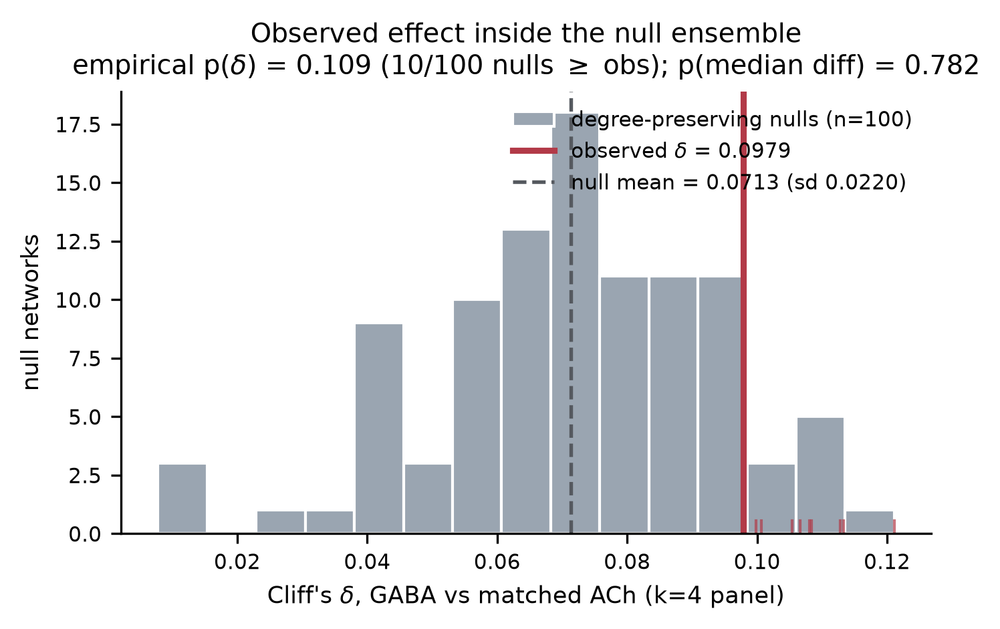
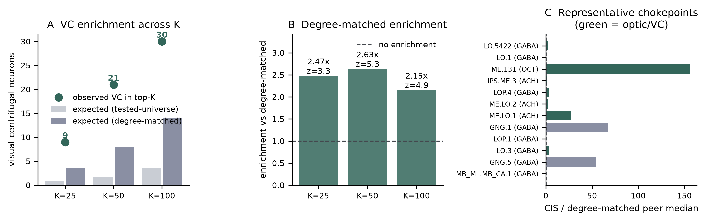

% Abstract Background. The FlyWire FAFB v783 connectome provides the complete wiring diagram of the adult female Drosophila brain (139,255 neurons; ~3.7M thresholded connections at the pair level), enabling neuron-level interrogation of directed network structure. Prior work showed that high-degree neurons are disproportionately GABAergic, but degree alone does not establish structural network control. Objective. Test whether GABAergic identity predicts neuron-level structural control impact --- the sensitivity of global directed network efficiency to the removal of a single neuron --- beyond what connectivity degree and degree-preserving network structure explain; and characterize where the strongest structural chokepoints reside. Methods. We defined the Control Impact Score, CIS(i)=1-S(G-i)/S(G), with S the sum of inverse directed shortest-path lengths (freeze-N convention), pre-registered 3,518 perturbation targets, computed CIS with a fixed-source-panel BFS estimator (validated to 1e-9 against exact computation), performed pre-registered degree matching (GABA vs.\ ACh, total degree +/-10%; 848 pairs), and compared the observed effect against 100 degree-preserving null networks with exactly verified in/out degree sequences. Results. Structural control impact is extremely skewed: the median tested neuron accounts for 10^{-5} of whole-brain efficiency; the top neuron accounts for 2.40%. The raw matched-pair GABA--ACh effect was small (Cliff's delta=0.111, Wilcoxon p=0.0011), but a degree-controlled regression found no residual GABA association (beta1=-0.025, permutation p=0.95), and the observed statistic at matched panel size (delta=0.098) fell inside the degree-preserving null ensemble (null delta=0.071+/-0.022; empirical p_delta=0.109; median-difference p=0.782; z=1.21). In contrast, the top-50 chokepoints were strongly enriched for visual-centrifugal neurons (21/50; 11.7x raw; 2.63x after degree matching, z=5.3, p=10^{-4}; consistent at K=25 and K=100), and 13/50 individually exceeded their degree-matched peers (10/13 visual-system), including a low-degree octopaminergic centrifugal neuron at {\sim}156x its peer-median impact. Conclusions. The pre-registered GABA hypothesis is not supported: the analysis does not provide evidence that GABAergic identity independently predicts structural control impact after accounting for degree and degree-preserving structure. Instead, removal-based network-control sensitivity concentrates in visual-centrifugal architecture, yielding a concrete, testable structural chokepoint map of the adult fly brain. All claims concern structural network sensitivity, not functional causality.
% 1. Introduction Whole-brain connectomes now make it possible to ask, at synaptic resolution, which individual neurons matter most for the directed flow of information through an entire central nervous system. For the adult female Drosophila melanogaster, the FlyWire reconstruction of the Full Adult Fly Brain (FAFB) volume provides a dense, verified wiring diagram of 139,255 neurons and roughly 3.7 million thresholded synaptic connections [dorkenwald2024], with cell typing and neurotransmitter predictions [schlegel2024] and a complete visual-system parts list [matsliah2024]. Directed network structure matters because the brain is not an undirected web of interactions: influence propagates along asymmetric anatomical paths, and the global ease of communication --- formalized as network efficiency, the mean inverse shortest-path length over all directed neuron pairs --- depends on how those paths are organized. Prior network analyses of the fly connectome established rich-club organization, motif structure, and the important observation that high-total-degree neurons are mostly GABAergic [lin2024]; earlier work examined information flow at coarser resolution [shih2015], and hierarchical modularity has been characterized [kunin2023]. A neuron's importance as a structural control point, however, cannot be read from its degree alone. Bridging positions can make sparse neurons disproportionately influential, whereas removing one of several parallel hubs may barely affect global communication. Removal-based perturbation --- delete a node, recompute global efficiency, and record the fractional loss --- captures this directly. Such analyses exist in aggregate, degree-ordered form for the fly brain [lin2024] and in other systems [uzel2022], but a per-neuron, neurotransmitter-resolved, degree-controlled ranking with null-model validation has not, to our knowledge, been reported for the adult connectome. Neurotransmitter identity is a natural candidate organizing variable: if inhibition were preferentially positioned at high-leverage network locations, this would constrain how the brain balances excitation and control. The association between GABAergic identity and high degree is already documented [lin2024]; the open question is whether any excess control impact remains after degree is accounted for. We therefore pre-registered a perturbation pipeline and froze the hypothesis before unblinding: \emph{after accounting for degree, GABAergic identity is associated with disproportionately high per-neuron structural control impact.} We tested this with (i) neuron-level removal perturbation on the FAFB v783 connectome using a validated Control Impact Score (CIS); (ii) degree-matched GABA--ACh comparison; (iii) 100 degree-preserving null networks; and (iv) a regression of control impact on degree and neurotransmitter identity. As a pre-planned secondary analysis, we mapped where the strongest structural chokepoints reside and tested their anatomical enrichment against degree-matched controls. Throughout, we distinguish network topology from functional neural dynamics: every quantity here is structural, computed from the wiring diagram alone. ``Structural control impact'' denotes sensitivity of global efficiency to computational node removal; it does not measure firing, causality, or behavioral necessity.
% 2. Related Work Connectome resources. The FAFB volume and its FlyWire segmentation constitute the first complete adult Drosophila brain connectome [dorkenwald2024], with whole-brain cell typing and neurotransmitter predictions [schlegel2024] and a dense visual-system inventory [matsliah2024]. Related resources now span the ventral nerve cord and whole-CNS datasets, enabling cross-dataset comparisons beyond this study's scope. Network analyses of the fly brain. Lin et al.\ analyzed rich- club organization, signed motifs, and degree-ordered neuron-removal survival curves on the adult connectome, and showed that high-degree neurons are mostly GABAergic [lin2024]. Earlier connectome-wide flow analysis [shih2015] and hierarchical modular decomposition [kunin2023] characterized organization at coarser grain. None of these produced a per-neuron control-impact ranking conditioned on neurotransmitter identity with degree-matched controls. Perturbation-style analyses. Set-wise manipulation of neural activity in a whole-brain simulation [shiu2024] probes function rather than structure; hub-neuron removal in C.\ elegans [uzel2022] established the removal approach at small scale without neurotransmitter-resolved controls; signed motif censuses [szilagyi2026] characterize local circuit logic rather than global removal impact. Visual-system architecture. Visual centrifugal neurons relay central-brain signals back to the optic lobes and have been catalogued anatomically [matsliah2024,hoeller2026]; a recent review develops the functional case for centrifugal feedback [mickels2026]. Concurrent work analyzed distributed control circuits across a brain-and-cord connectome (BANC) at whole-CNS scale [bates2026] --- a different dataset and scope. Our contribution conditions the architecture on quantitative, degree-matched removal impact in the adult brain, which prior anatomical catalogues do not provide. Gap. To our knowledge, previous studies have not reported this specific combination of neuron-level removal-based global-efficiency impact, degree-controlled neurotransmitter comparison, degree-preserving null testing, and visual-centrifugal enrichment analysis in FAFB v783. The full 22-paper verification matrix with per-entry verification status is available in literature/literature\_review.csv.
% 3. Materials and Methods
e18\_manifest.json and re-verified during finalization). tests/test\_null\_models.py). Degree-preserving nulls are required because CIS grows steeply with degree: comparing the raw GABA--ACh effect to randomly rewired networks with the same degree structure asks whether the observed effect exceeds what generic degree-bearing topology necessarily produces. The final E10B ensemble contains n=100 nulls (null\_id 0--99, seeds 100+i, three parallel workers, crash-safe checkpointing); the observed statistic enters the comparison at the same panel size (k{=}4) as the nulls. src/), seeded where stochastic, checkpointed, and logged in the append-only research log. Final artifacts: results/final/e10b\_final.json (byte-identical to results/tables/e10b\_results.json), per-null rows e10b\_nulls.csv, an independent recomputation verifier (scripts/verify\_e10b\_final.py), a 43-row number audit, and the SHA256 manifest. Superseded interim artifacts are quarantined under results/superseded/.
% 4. Results
% 5. Discussion Main finding 1: the GABA-specific hypothesis is not supported. The pre-registered test --- degree matching, degree-controlled regression, and an ensemble of 100 degree-preserving null networks --- did not provide evidence that GABAergic identity independently predicts structural control impact beyond degree-related structural effects. The small matched-pair advantage (delta~=0.10--0.11 depending on panel size) lies inside the null ensemble, and the regression residual is indistinguishable from zero. This is a meaningful negative result: given the documented GABA--degree association [lin2024], the analysis asked precisely whether anything remains beyond degree, and at this resolution and estimator, nothing does. The claim is bounded: it does not establish that degree causes control impact, nor that neurotransmitters play no role in circuit function beyond what a structural, shortest-path analysis can detect. \paragraph{Main finding 2: structural chokepoints concentrate in visual-centrifugal architecture.} The strongest neurons are not scattered randomly across the degree distribution: they concentrate in visual-centrifugal circuitry (2.63x after degree matching, z=5.3), consistently across threshold choices (K=25/50/100). This is the study's positive contribution --- a concrete, ranked, anatomy-linked structural chokepoint map of the adult fly brain, quantified against degree-matched nulls rather than raw base rates. It is consistent with anatomical knowledge that centrifugal feedback neurons bridge the massive optic-lobe periphery to the central brain [matsliah2024,hoeller2026,mickels2026]: such bridge positions make single-neuron removal disproportionately damaging to eye--brain communication paths. \paragraph{Main finding 3: some individuals exceed degree-matched peers substantially.} Thirteen of the top 50 beat their degree-matched peers individually, and one moderate-degree centrifugal neuron reaches {\sim}156x its peer median. Degree alone therefore does not completely explain the observed architecture. As clearly labeled hypotheses for future work, plausible contributors include inter-batch (inter-neuropil) bridging topology, bilateral mirror-position redundancy, and cell-type-specific wiring patterns; none of these was tested here, and we do not assert any as established mechanisms. Biological meaning. All findings concern structural network features: sensitivity of a shortest-path efficiency functional to computational node removal. They identify network-control-sensitive neurons, not functional necessity; removal impact is an abstraction of silencing, not a physiological manipulation. The results generate specific, testable predictions --- e.g., that perturbing the identified centrifugal chokepoints should disproportionately affect eye--brain signal propagation --- but establishing that requires functional experiments. Limitations. (1) Structural, not functional: no firing rates, dynamics, or state dependence. (2) Dependence on a single reconstruction (FAFB v783, one female brain); cross-dataset replication (BANC, MaleCNS) remains future work. (3) The node-removal metric is one abstraction; a reachability-drop metric correlates only moderately (rho=0.39) and both are reported. (4) Neurotransmitter annotations are predictions, not measured signs; GLUT was deliberately analyzed separately. (5) Degree matching is greedy 1:1 within +/-10%; residual degree imbalance within windows cannot be fully excluded, though the null ensemble --- which preserves degree exactly --- addresses the dominant confound. (6) The full no-threshold connection-table sensitivity analysis was RAM-infeasible here ({\sim}50M pairs; deferred to high-RAM), and the Buhmann table is non-comparable; this axis remains open. (7) Empirical p-values on 100 nulls have {\sim}0.01 tail resolution, and the null comparison uses the k{=}4 panel (observed delta=0.098) while the primary matched-pair statistic reads delta=0.111 at k{=}8; both statistics agree on the verdict, and the OLS independently points the same way. Future work. Functional recordings targeting the identified chokepoints; activity-aware and temporal-dynamics models; synaptic-weight-aware efficiency metrics; higher-resolution (no-threshold) sensitivity analyses on high-RAM hardware; cross-dataset replication; and experimental validation of the centrifugal chokepoint predictions.
% 6. Limitations
% 7. Conclusion In the adult Drosophila connectome, neuron-level structural control impact --- the sensitivity of global directed efficiency to single-neuron removal --- is not explained by neurotransmitter identity: the pre-registered GABAergic-excess hypothesis was rejected under degree-controlled comparison and an ensemble of 100 exact degree-preserving null networks. Instead, structural chokepoints concentrate reproducibly in visual-centrifugal architecture, with a minority of individual neurons --- most notably low-degree centrifugal bridges --- exceeding degree-matched peers by orders of magnitude. These results map where the adult fly brain's wiring is most sensitive to single-neuron perturbation, and provide a ranked, anatomically annotated target list for functional testing. The analysis is structural throughout; it identifies network-control-sensitive neurons, not functionally indispensable ones.

Figure 1.

Figure 2. Study overview. (A) The FAFB v783 adult female Drosophila connectome (139,255 neurons) is (B) represented as a binary directed graph (138,584 nodes; 3,732,460 edges). (C) Each pre-registered target neuron is removed computationally and (D) its structural control impact is quantified as CIS(i)=1-S(G-i)/S(G), the fractional loss of global directed efficiency. (E) Workflow: 3,518 pre-registered targets screened at k=8 and re-ranked at k=32; 848 degree-matched GABA--ACh pairs; 100 degree-preserving null networks (exact in/out degree sequences, verified per null); enrichment and per-node chokepoint analyses. Outcomes: the GABA-excess hypothesis is not supported (delta=0.098 inside the null ensemble, p_delta=0.109, p_{median}=0.782), while visual-centrifugal chokepoints are enriched (2.63x at K=50 after degree matching, z=5.3, p=10^{-4}; 13/50 beat degree-matched peers). All claims are structural (removal-based network sensitivity), not functional causality.

Figure 3. Network and structural control-impact characterization. (A) CIS distribution across the 3,518 pre-registered perturbation targets (log scale); dashed line: median 9.7x10^{-6}; red line: maximum 0.024. (B) Anatomical composition of the top-50 chokepoints by super-class (green: visual centrifugal/optic; grey: central and other). (C) Median degrees: top-50 out-degree 1,050 and in-degree 566 versus tested-population median total degree 315 --- top chokepoints are output-dominated hubs. n: 3,518 (A); 50 (B); medians from the frozen E13 outputs (C).

Figure 4. The GABAergic hypothesis is not supported. (A) Per-pair CIS differences (GABA - matched ACh; 848 pairs, k=8 screening CIS); red line: median difference 8.7x10^{-7}. (B) Matched CIS distributions (box plots, outliers suppressed; medians annotated); Wilcoxon p=0.0011 reflects the small raw advantage. (C) The decisive comparison: observed Cliff's delta=0.098 (k=4 panel, matched estimator) against the 100-null degree-preserving ensemble (mean 0.071, sd 0.022); empirical p_delta=0.109, p_{median}=0.782 --- the observed statistic lies inside the null ensemble. The visual pairing of (B) and (C) is intentional: a statistically detectable raw difference can still be fully compatible with degree-preserving structure.

Figure 5. Degree control. (A) log10(CIS) versus log10(degree) for GABA neurons and their matched ACh controls (848 pairs); CIS rises steeply with degree. (B) Pairwise log-ratio log10(CIS_{GABA}/CIS_{ACh}) versus degree; the degree-controlled OLS coefficient for GABA identity is beta1=-0.025 (permutation p=0.95) --- no residual GABA association after degree adjustment.

Figure 6. Degree-preserving null-network framework. (A) Procedure: the observed graph is rewired by vectorized stub matching with defect repair (partner sets distinct from and disjoint to defects) and rejection redraw; every accepted null preserves both degree sequences exactly and carries no self-loops or duplicate directed edges; the matched-pair statistic is recomputed on the same 848 pairs at the same panel size (k=4); the ensemble comprises 100 nulls (null\_id 0--99, seeds 100+i). (B) Per-null verification: 100/100 nulls show exact in- and out-degree sequence matches (status ok).

Figure 7. E10B final null distribution (decisive result). Grey: Cliff's delta for the 100 degree-preserving nulls; red line: observed delta=0.098; dashed line: null mean 0.071 (sd 0.022). Red ticks mark the 10 nulls meeting or exceeding the observation (empirical p_delta=0.109); the median-difference statistic independently gives p=0.782. The observation lies inside the ensemble: no visual or statistical excess over degree-preserving structure is implied. n=100 nulls; estimator matched between observation and nulls.
| Quantity | Value |
| Metadata universe (neurons merged) | 139,255 |
| Graph nodes (edge-table universe) | 138,584 |
| Graph edges (collapsed pairs) | 3,732,460 |
| Mean degree | 26.8 |
| Density | 1.92x10^{-4} |
| Reciprocity | 0.083 |
| Largest weak component | 98.4% |
| Weak components | 875 |
| Pre-registered perturbation targets | 3,518 |
| Degree-matched GABA--ACh pairs | 848 |
| Degree-preserving null networks | 100 (all verified) |
Table. Dataset and network characteristics. FlyWire FAFB v783 (Princeton exports); binary directed graph after pair-collapse of the thresholded connection table. All values from the authoritative result files (e18\_manifest.json, E01/E02 outputs).
| Statistic | Value |
| Matched pairs (GABA vs ACh, total degree +/-10%) | 848 |
| Median difference in CIS (k=8 screening) | 8.75e-07 |
| Cliff's delta (matched) | 0.111 |
| Wilcoxon signed-rank p | 0.0011 |
| Permutation p (median difference) | 1.0e-04 |
| OLS beta1 (GABA), log10CIS ~ GABA + log10degree | -0.025 |
| Permutation p on beta1 (one-sided) | 0.95 |
| Unmatched medians (GABA / ACh) | 1.01e-05 / 9.26e-06 |
Table. Primary GABA hypothesis statistics. The raw matched-pair effect is small and does not survive degree control (OLS beta1~= 0); see Table~(tab:nulls) for the decisive null-ensemble comparison. Source: e09\_results.json.
| Statistic | Value |
| Null networks (exact in/out degree preservation) | 100 |
| Observed delta (k=4 panel, matched estimator) | 0.0979 |
| Null delta: mean +/- sd | 0.0713 +/- 0.0220 |
| Null delta: median / min / max | 0.0729 / 0.0078 / 0.1211 |
| Null delta: 2.5% / 97.5% percentile | 0.0193 / 0.1107 |
| Nulls >= observed | 10 / 100 |
| Empirical p(delta) | 0.109 |
| Observed median difference | 6.62e-07 |
| Null median-difference mean | 1.53e-06 |
| Empirical p(median difference) | 0.782 |
| z vs null ensemble | 1.21 |
Table. E10B degree-preserving null-network results. Every null was verified to preserve both degree sequences exactly before its statistic was admitted. The observed statistic lies inside the null ensemble: the pre-registered hypothesis is rejected (Scenario B). Source: results/final/e10b\_final.json and e10b\_nulls.csv.
| K | Obs | Exp_{univ} | Exp_{deg} | Enrich. | z | p |
| K=25 | 9 | 0.9 | 3.6 | 2.47x | 3.3 | 2.1e-03 |
| K=50 | 21 | 1.8 | 8.0 | 2.63x | 5.3 | 1.0e-04 |
| K=100 | 30 | 3.6 | 14.0 | 2.15x | 4.9 | 1.0e-04 |
Table. Visual-centrifugal enrichment of top-K structural chokepoints. Obs = observed visual-centrifugal count; Exp_{univ} = expectation under tested-universe random draws (control A); Exp_{deg} = expectation under per-slot degree-matched draws (control B); Enrichment and z are given against control B, the degree-matched null. Source: e12\_strong\_results.json.
| Rank | Neuron | NT | Class | Degree | CIS | vs peers | emp p |
| 1 | LO.5422 | GABA | optic | 12,444 | 2.40% | 2.4x | <0.0005 |
| 2 | LO.1 | GABA | optic | 12,784 | 1.02% | 0.4x | 1.000 |
| 3 | ME.131 | OCT | visual\_centrifugal | 858 | 0.32% | 155.9x | <0.0005 |
| 4 | IPS.ME.3 | ACH | visual\_centrifugal | 2,063 | 0.03% | 1.5x | 0.291 |
| 5 | LOP.4 | GABA | optic | 4,021 | 0.04% | 3.0x | <0.0005 |
| 6 | ME.LO.2 | ACH | optic | 1,909 | 0.04% | 2.0x | 0.069 |
| 7 | ME.LO.1 | ACH | optic | 1,891 | 0.33% | 26.7x | <0.0005 |
| 8 | GNG.1 | GABA | central | 958 | 0.16% | 67.4x | 0.024 |
Table. Representative structural chokepoints (E14-v2, selection-bias-corrected). ``vs peers'' = CIS relative to the median of degree-matched peers (self excluded); emp p = empirical p-value against those peers. NT = predicted neurotransmitter (Schlegel et al. 2024 annotations); all claims are structural, not functional. Source: e14\_chokepoint\_catalogue\_v2.csv.
NOTE: this PDF is an inspection rendering of the submission-grade LaTeX source (paper/manuscript.tex) for machines without a TeX toolchain; it contains identical text, figures, tables, and references.